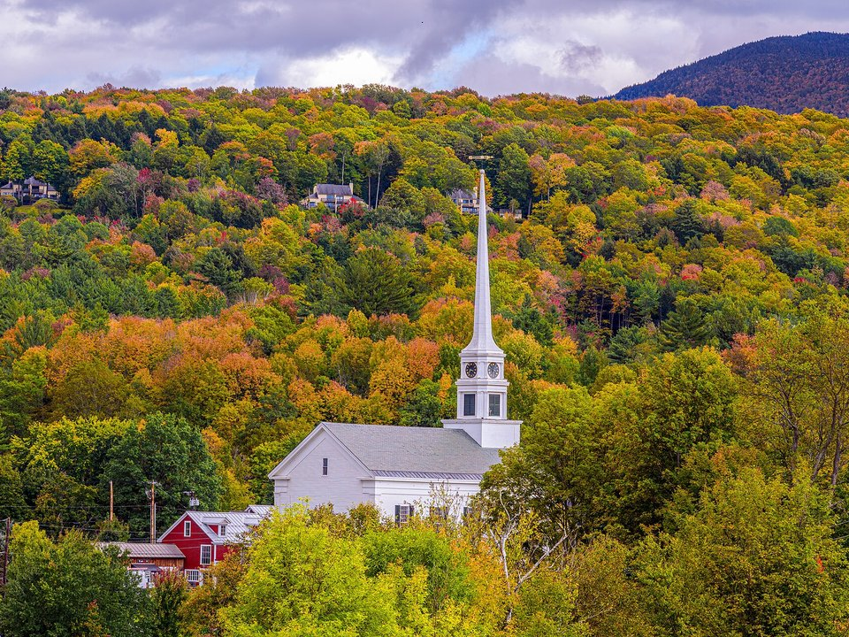

Mountain Road · Resort & spa
Topnotch Resort
A polished resort below Mount Mansfield with one of New England’s best-known spas and a fire-pit terrace.
Official details for Topnotch ResortA white steeple, a big mountain and the best fall color.
Stowe is the classic New England village: a white church steeple below Mount Mansfield, Vermont’s highest peak. Fly into the valley, drive up the mountain, walk or bike the riverside path, stop for cider donuts and craft beer, and end the day by the fire at a mountain resort.

Time illustration: direct distance at 150 KTAS plus 15 minutes for departure and arrival, matching the discovery page. Use ForeFlight for your actual flight plan.
Check the weekend weather at both ends → Flight category, your minimums and the crosswind on the best runway.
KMVL, Morrisville–Stowe State Airport, is a small state-owned field about 15 minutes north of Stowe village.
2305 Laporte Road, Morrisville, VT 05661
Directories list no full-service FBO here, so confirm fuel, parking and ground transport before you go, and arrange a rental car or taxi from Stowe ahead. For full services, Heritage Aviation at Burlington (KBTV, 228 Aviation Avenue, South Burlington) is about 45 minutes from Stowe.
Mountain flying: Mount Mansfield and the Green Mountains rise just south and west of the field. Expect valley fog and gusty winds, and winter weather from November to April. This is about 700 nm from Myrtle Beach; plan a fuel stop.
Rates and availability need travel dates.
A polished resort below Mount Mansfield with one of New England’s best-known spas and a fire-pit terrace.
Official details for Topnotch ResortA luxury lodge at the base of the mountain, with a spa and the Spruce Peak village.
Official details for The Lodge at Spruce PeakThe von Trapp family’s mountain resort, with sweeping views, trails, a bierhall and a brewery.
Official details for Trapp Family LodgePrices and availability for your dates, through our partner Stay22. This is an affiliate link: we may earn a commission at no cost to you. The picks above are never paid.
Farm-to-table cooking and great beer. Reserve on fall and ski weekends.
Seasonal, farm-driven cooking in a cozy room in Stowe village.
Official details for PlateVermont’s celebrated farm-to-table restaurant, about 20 minutes away in Waterbury. Book ahead.
Official details for Hen of the WoodAustrian-style lunch and lagers brewed on site, with mountain views.
Official details for von Trapp BierhallOne outing a day, and time for the village.
Ride the gondola or drive the Auto Toll Road for views across Vermont to Lake Champlain and the Adirondacks. Seasonal.
A 5.3-mile paved path along the river from the village, with covered bridges and mountain views.
A narrow mountain pass with towering cliffs and boulders, open to cars in summer and fall.
Cold Hollow Cider Mill’s cider donuts, the Ben & Jerry’s factory in Waterbury and local cheesemakers.
A short walk to a pretty waterfall a few minutes from the village.
Topnotch’s spa offers couples treatments, indoor and outdoor pools and quiet lounges with mountain views.
Booking: Ask about couples treatments, access for non-guests, current pricing and cancellation policy. No prices are shown here, and no appointment has been booked.
This prototype links to the local visitor site. It does not yet match events to your travel dates.
Some of the best foliage in New England. Spectacular and very busy; book months ahead.
Stowe Mountain Resort’s ski season. Winter flying needs careful planning.
Hiking, music and cool evenings.
Check the local calendar when choosing a weekend, and confirm dates and tickets with the organizer.
A sample Friday–Sunday weekend: the mountain, the path and two Vermont dinners. No bookings or availability confirmed.
Land at KMVL early and pick up the car.
The gondola up Mount Mansfield and lunch at the von Trapp Bierhall.
The Recreation Path, then back before mountain afternoon weather.
Land at KMVL, subject to weather, your fuel stop and your actual flight plan, and pick up the car.
Check in and walk the village.
Dinner at Plate.
The gondola or Toll Road up Mount Mansfield.
Lunch at the von Trapp Bierhall, then the spa or Smugglers’ Notch.
Dinner at Hen of the Wood.
Bike or walk the Recreation Path, with cider donuts.
Return the car and check fuel and weather.
Valley fog often lifts by mid-morning.
A hike to Sterling Pond or Stowe Pinnacle.
Ben & Jerry’s and Cold Hollow Cider Mill in Waterbury.
A spa evening and dinner at your resort.
This guide is part of a multi-stop flying trip. Set your dates and aircraft, then swap stops to make it your own.
These details make the difference between an appealing list and a usable getaway.
Lodging and a car first, then dinners.
Confirm fuel and ground transport at KMVL, or use Burlington for full services.
Ridges, fog and early winter. Keep a backup day.
Late September and early October fill months ahead.
Picks and links reviewed by WingAway Weekends. Hours, prices, menus and availability change often, so confirm directly with each place before booking. Spotted something out of date, or have a favorite we missed? Email us at hello@wingawayweekends.com.
WingAway Weekends helps you discover the destination. Use ForeFlight and current official aviation information for route, performance, weather, NOTAMs and preflight decisions. Flight planning and PIC responsibility stay with the pilot.